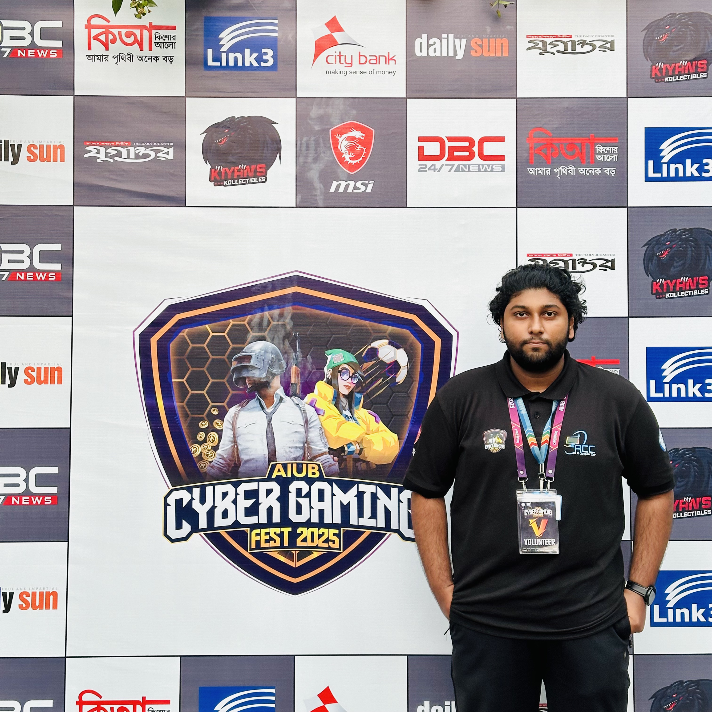

ISRAK AHMED
Job Title: Computer Science Student
Mobile: 01992851902
Email: nirjonisrak@gmail.com
Bio
I am a dedicated Computer Science student at American International University Bangladesh, expected to graduate in February 2027 with a BSc in Computer Science & Engineering. I have completed 110 credits out of 148 with a current CGPA of 3.41. My passion lies in programming and technology, and I have experience in tutoring, volunteering, and participating in university activities. I possess strong skills in DSA, Java, C++, MySQL, and AutoCAD, along with soft skills like time management, communication, and teamwork. I am eager to apply my knowledge in real-world projects and contribute to the tech community.